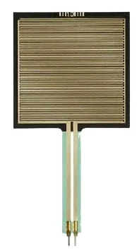
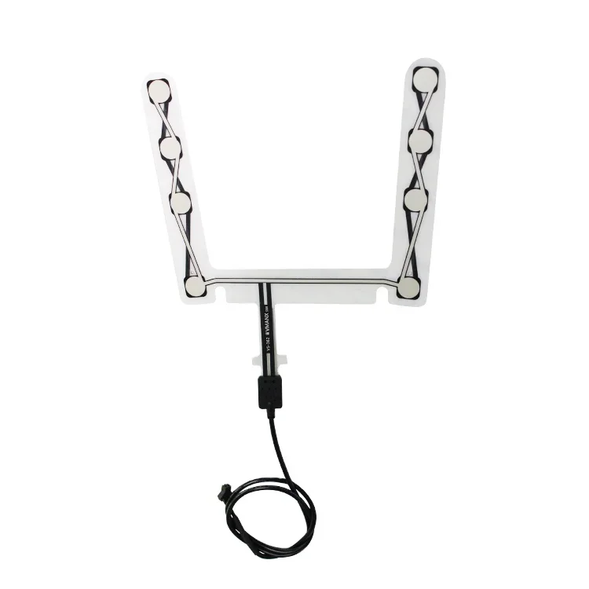
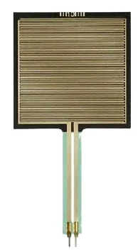
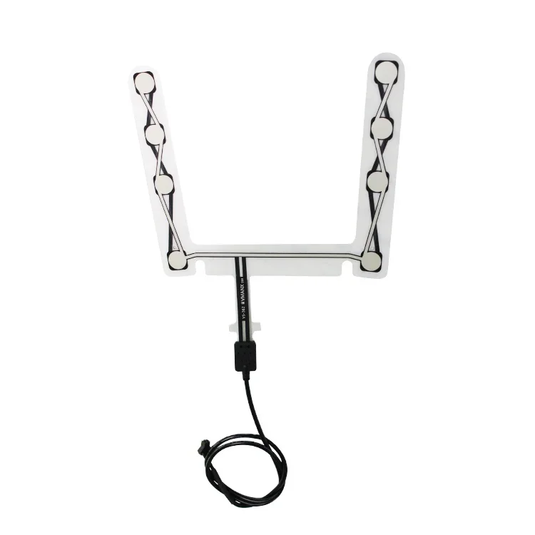

Ceinture de sommeil double avec moniteur - Fréquence respiratoire, fréquence cardiaque, détection des ronflements et alertes de sortie du lit - Port série, capteur économique
Plus qu'un simple traqueur de sommeil, cette ceinture propose une multitude de fonctionnalités conçues pour améliorer votre sommeil :
- Surveillance de la fréquence respiratoire : Améliorez votre compréhension de votre respiration et identifiez les problèmes potentiels dès leur apparition.
- Suivi de la fréquence cardiaque : Surveillez la variabilité de votre fréquence cardiaque pendant la nuit, révélant ainsi votre niveau de stress et votre bien-être général.
- Détection des ronflements : La ceinture de sommeil Double Bed Sleep Belt détecte les ronflements, vous aidant à en identifier les causes potentielles et à trouver des solutions pour un sommeil plus calme et plus paisible.
- Alertes de sortie du lit : Recevez des notifications lorsque vous vous levez pendant la nuit, vous permettant ainsi de corriger vos mouvements nocturnes et d'améliorer la qualité de votre sommeil.
La ceinture de sommeil Double Bed Sleep Belt La connexion directe via port série permet une intégration fluide avec votre logiciel d'analyse du sommeil préféré. Apprenez à mieux connaître votre sommeil et prenez votre santé en main ! La ceinture de sommeil Double Bed : découvrez les secrets d'un sommeil réparateur.
Le moniteur de sommeil Double Bed Sleep Belt Monitor offre une suite complète de fonctionnalités conçues pour vous fournir des informations précieuses sur vos habitudes de sommeil et votre santé globale.
- Surveillance du sommeil : Suivez vos phases de sommeil, leur durée et leur qualité pour une meilleure compréhension de votre repos nocturne.
- Suivi de la fréquence respiratoire : Surveillez vos cycles respiratoires tout au long de la nuit afin d'identifier d'éventuelles irrégularités.
- Surveillance de la fréquence cardiaque : Obtenez des informations continues sur la variabilité de votre fréquence cardiaque, révélant des données importantes sur votre santé cardiovasculaire.
- Détection des ronflements : Le moniteur détecte intelligemment les ronflements, vous permettant ainsi de lutter contre ce trouble du sommeil fréquent.
- Alerte de sortie du lit : Recevez des alertes si vous quittez votre lit pendant la nuit, ce qui favorise la vigilance et peut prévenir les chutes.
Ce moniteur de sommeil avancé possède des spécifications qui garantissent précision et fiabilité :
- Communication par port série : Permet un transfert de données fluide vers votre ordinateur pour une analyse et un rapport détaillés.
- Compatible avec les lits doubles Cadres : Conçus spécifiquement pour les lits doubles, assurant un ajustement et un confort optimaux.
La ceinture de surveillance du sommeil pour lit double offre de nombreux avantages qui peuvent améliorer considérablement votre bien-être :
- Amélioration de la qualité du sommeil : Mieux comprendre vos cycles de sommeil et identifier les points à améliorer pour des nuits plus reposantes.
- Meilleure connaissance de la santé : Suivez des indicateurs clés de santé comme la fréquence respiratoire et la variabilité de la fréquence cardiaque pour surveiller l’évolution de votre santé globale.
- Réduction des ronflements : Identifiez les épisodes de ronflement et explorez des solutions pour un environnement de sommeil plus calme et paisible.
- Sécurité accrue : Recevez des alertes si vous quittez le lit pendant la nuit, réduisant ainsi le risque de chutes et favorisant la tranquillité d’esprit.
La ceinture de surveillance du sommeil pour lit double est conçue pour une utilisation facile :
1. Placez le moniteur en toute sécurité autour du cadre de votre lit double en suivant les instructions fournies.
2. Connectez le port série à votre ordinateur.
3. Téléchargez et installez le logiciel fourni pour la visualisation et l'analyse des données.
4. Démarrez votre session de suivi du sommeil et profitez des informations sur vos nuits réparatrices !